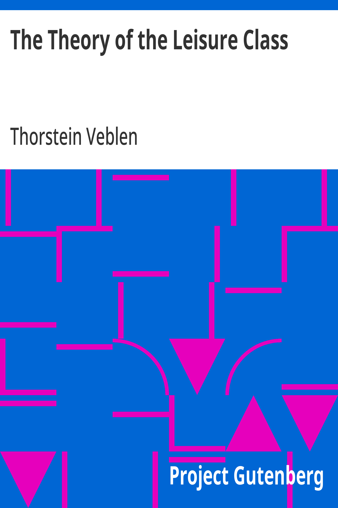

The Theory of the Leisure Class
نظرية الطبقة المترفة
الاقتصاد والمجتمع
ملك عام
ترجمة كاملة
الكتاب الذي وضّع «الاستهلاك التباهي» في قاموس العالم: فيبلن يشرّح كيف تنشأ الطبقة المترفة من عادات التباهي والفراغ بالوكالة، ولماذا نكدّس ما لا نستهلكه. أول تفكيك اقتصادي-أنثروبولوجي للمجتمع الصناعي بسخرية أكاديمية رفيعة — من الكتب التي تقرأ عالمنا اليوم أفضل من كتب اليوم.
| المؤلف | ثورستاين فيبلن — Thorstein Veblen |
| سنة النص الأصلي | ١٨٩٩ |
| كلمات المصدر (الإنجليزية) | ١٠٥٤٧٣ |
| كلمات الترجمة (العربية) | ٧٦٨٦٧ |
| مقاطع الترجمة المدققة | ٥٨ |
| مدة القراءة التقريبية | ≈ ١٧٤٥ دقيقة |
الترخيص والحقوق: النص الأصلي (١٨٩٩) في الملك العام. هذه الترجمة العربية منشورة بإذن حر. المصدر: gutenberg.org/ebooks/833